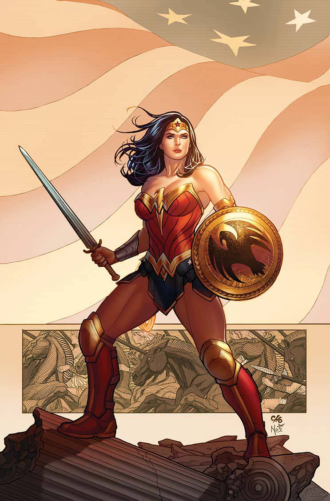

Wonder Woman
The Amazons were once more made from clay and existed independently from men until their enslavement and escape to Paradise Island. Although Wonder Woman was the love child of Hippolyta and Zeus. Chosen to go to Man's World for the first time after Steve Trevor crash landed on an island named Themyscira, to act as an ambassador for Themyscira and to stop Ares who was now directly responsible for Steve's crash. She then decided to help the outside world with their problems and try to open Themyscira to the world.
